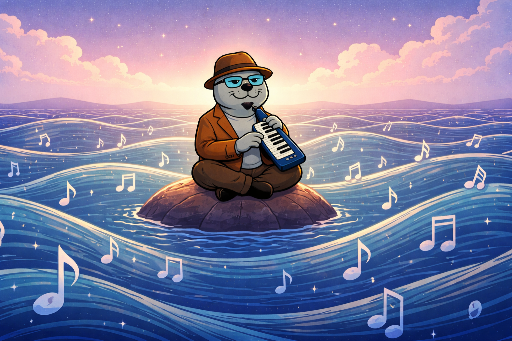
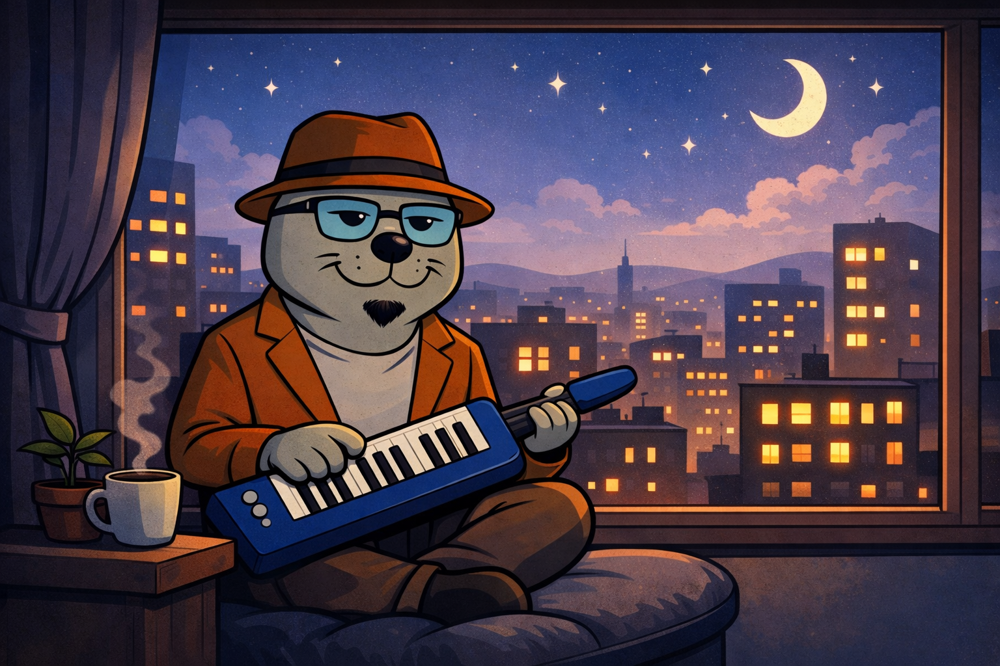
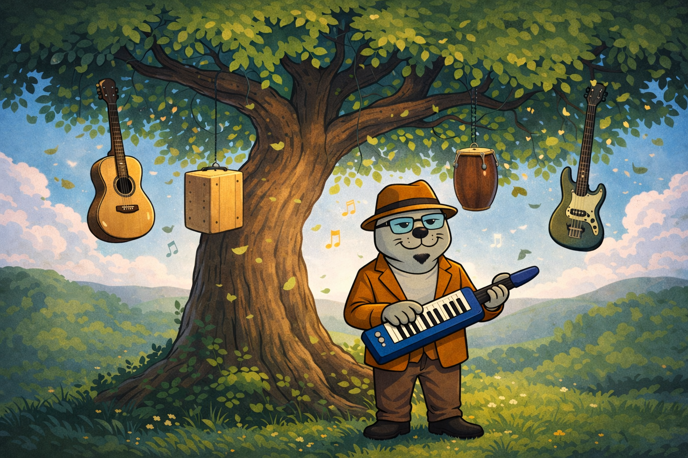
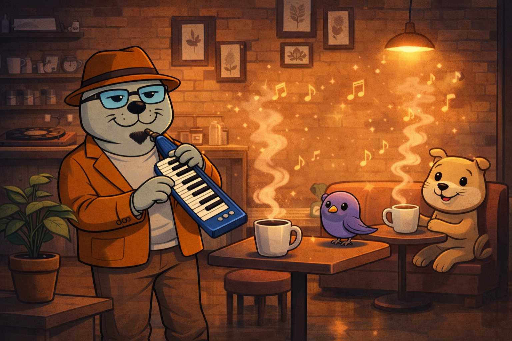
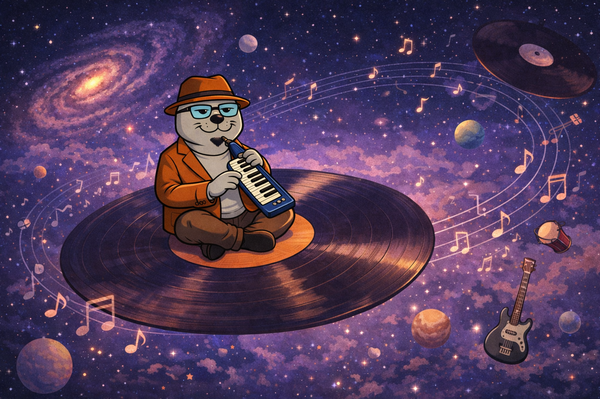

Música, animación y visuales

Focaraque tocando mientras el mar se mueve con notas musicales.

Visual nocturno donde la ciudad se ilumina con cada nota.

El árbol musical donde los instrumentos crecen entre ramas.

Un café cálido donde la música sale del vapor.

Focaraque viajando en un vinilo por el universo musical.
Focaraque es un personaje musical que mezcla animación, ritmos y visuales creados por Fabian Araque. El proyecto vive entre la música, el arte animado y las historias sonoras.